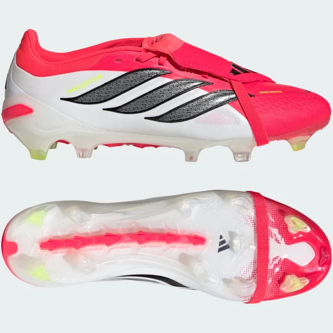

Adidas is a globally recognized sportswear company founded in 1949 by Adolf “Adi” Dassler in Germany. Famous for its iconic three-stripe logo, Adidas produces a wide range of products including sports shoes, clothing, and accessories for athletes and everyday consumers. The brand is especially popular in football, running, basketball, and lifestyle fashion, with well-known product lines such as Ultraboost, Superstar, Stan Smith, and Predator. Over the years, Adidas has built a strong reputation for combining performance, comfort, and style through innovative technologies and creative designs. The company also collaborates with athletes, celebrities, and fashion designers, helping it remain influential in both sports and streetwear culture. Today, Adidas is one of the leading sports brands in the world and continues to focus on innovation, sustainability, and global sports partnerships.
Premium adidas shoes are high-end sneakers designed with advanced comfort technology, stylish designs, and premium-quality materials. adidas is famous for combining sports performance with fashion, making its premium shoes popular among athletes, sneaker lovers, and streetwear fans. Many premium collections include Boost cushioning for extra comfort, lightweight running technology, leather or suede finishes, and collaborations with designers like Stella McCartney and Yohji Yamamoto
